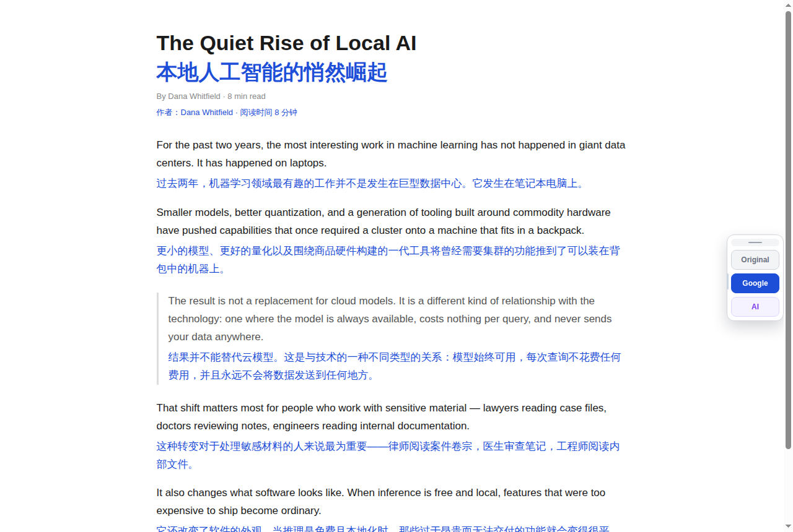

DualTran never replaces the source text. It puts the translation directly under each paragraph, so you can look up at the original sentence and down at the translation at any time. Google Translate is free and works out of the box, and you can plug in 20+ AI models with your own API key.

Machine translation drifts. With both texts on screen you can check terms, tone and negations against the source sentence instead of being carried away by one bad translation.
Google Translate is fast and consistent; AI is more nuanced. Run both at once, compare the two versions side by side and trust the one you prefer.
BYOK: use your own OpenAI, DeepSeek, Qwen, Moonshot or OpenRouter account. Keys are stored locally — there is no relay server in between.
The same “original on top, translation below” approach, ported to the tools you already live in.
IDEA / PyCharm / WebStorm / GoLand: select code or comments, press Ctrl+Alt+T, get a popup and the text in your clipboard.
Download ZIP (offline install)Select a paper and its title and abstract are translated into a child note, with the source kept above.
Download .xpiA whole note is translated into a separate note; the original is left untouched.
Download .jplBlock-level and page-level translation, with the translation written right under each block.
View repositorySelect a paragraph and translate it in one click; the translation is inserted as a new paragraph below (Apps Script add-on).
View repositoryMirror a page into a bilingual copy: every paragraph followed by its translation.
View repositoryType dt hello in the launcher and press Enter to copy the translation.
Paragraph-by-paragraph bilingual translation inside your notes, keeping the Markdown structure intact.
View repositoryNo. Google Translate is the default and works as soon as you install the extension. To translate with AI, add a key from any provider you like (OpenAI, DeepSeek, Qwen, Moonshot, OpenRouter or a local Ollama instance).
No. The extension collects no analytics and runs no server of its own. The text to be translated is sent only to the translation service you choose (Google or your own AI provider).
The Google channel translates between 100+ languages; the AI channel depends on the model you use. The interface itself is localised into 38 languages.
That is the clickable translation style, which makes it easy to copy or compare. You can switch it to the body text colour in Styles.
Not yet. Desktop Chrome, Edge and Firefox are supported; the Obsidian plugin covers note-taking.